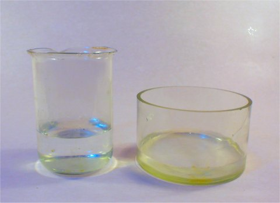
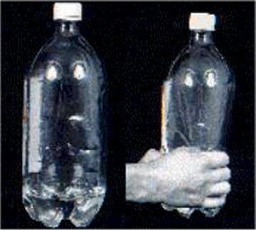
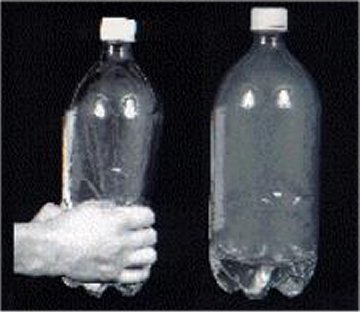
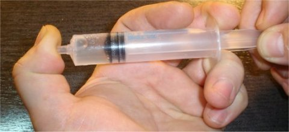

Elemente de termodinamică. |
Transformări de stare de agregare |
Oxigenul este obţinut industrial prin lichefierea aerului şi încălzirea treptată a acestuia.
a. Care sunt condiţiile necesare (presiune, temperatură) pentru lichefierea aerului?
b. Care gaz te aştepţi să se separe primul din aerul lichid supus unei încălziri treptate, oxigenul sau azotul?
Răspuns parţial: a. Temperatura trebuie redusă sub cea critică a aerului, iar presiunea trebuie mărită peste cea critică a aerului (vezi tabelul 2−1).
În două vase, unul mult mai larg decât celălalt, au fost puse cantităţi egale de apă (figura 1).

Figura 1. Cantităţi egale de apă au fost
turnate în cele două vase.
În care dintre cele două vase te aştepţi să se desfăşoare mai rapid evaporarea, dacă sunt menţinute la aceeaşi presiune şi la aceeaşi temperatură?
Răspuns parţial: Evaporarea are loc prin suprafaţa liberă a lichidului; cu cât această suprafaţă este mai mare, cu atât viteza de evaporare va fi mai mare.
a. De ce oare rufele se pun la uscat cât mai întinse?
b. Când adie vântul, rufele se usucă mai repede. De ce oare?
c. Într−o încăpere mică, neaerisită, au fost puse multe rufe la uscat. Ce te aştepţi să se întâmple, în timp, cu viteza de uscare a rufelor?
Răspuns parţial: c. Scade, pe măsură ce presiunea vaporilor de apă se apropie de cea a vaporilor saturanţi la temperatura încăperii.
Interesează−te care este nivelul anual al precipitaţiilor în zona în care locuieşti şi estimează rata anuală a evaporării apei.
Cum ai putea oare verifica experimental estimarea făcută?
În zilele friguroase, pe interiorul ferestrelor apar mici picături de apă − condensul.
De unde provine oare această apă?
Răspuns parţial: Din vaporii de apă din aer, care condensează pe ferestrele reci.
Priveşte aerul din jurul tău. Te aştepţi ca acesta să conţină vapori de apă? Cum ai putea verifica?
Aburii pe care îi vezi ridicându−se deasupra unei ceşti de ceai fierbinte sunt oare vapori de apă?
Răspuns: Vaporii de apă nu sunt vizibili (priveşte aerul din jurul tău: sigur conţine vapori de apă, dar nu−i poţi vedea). Ceea ce vezi sunt picăturile fine de apă rezultate din condensarea vaporilor de apă în contact cu aerul mai rece.
Formarea norilor este esenţială pentru clima Pământului. Poţi investiga formarea norilor utilizând lucruri la îndemână!
Toarnă apa dintr−un pahar într−un flacon de plastic transparent de 2,5 L (cum sunt cele în care se îmbuteliează băuturile răcoritoare). Înşurubează−i capacul. În câteva secunde, vaporii de apă din butelie devin saturanţi.
Strânge puternic flaconul pentru câteva secunde, apoi eliberează−l brusc (figura 2).

Figura 2. Strângerea flaconului.
Strângând puternic flaconul, măreşti presiunea şi temperatura aerului şi a vaporilor de apă. Aşteptând câteva secunde, este transferată căldură mediului ambiant, astfel încât aerul şi vaporii de apă au din nou aproape temperatura mediului ambiant, dar la o presiune mai ridicată, vaporii fiind saturanţi.
Eliberând brusc flaconul, presiunea şi temperatura scad brusc (destindere adiabatică), iar vaporii devin suprasaturanţi − cantitatea de vapori din aer este mai mare decât cea corespunzătoare stării de vapori saturanţi la temperatura acum mai coboră.
Cu toate acestea, vaporii nu condensează! Condensarea vaporilor are nevoie de centre de condensare, care să favorizeze începerea condensării.
Deşurubează capacul şi aruncă în interiorul flaconului un băţ de chibrit aprins. Acesta se stinge imediat, dar particulele de fum pe care le lasă în aerul din flacon reprezintă excelente centre de condensare.
Înşurubează capacul, strânge puternic flaconul pentru câteva secunde, apoi eliberează−l brusc (figura 3).

Figura 3. Formarea norului prin condensarea
vaporilor suprasaturanţi ai apei, la eliberarea bruscă a flaconului.
De data aceasta, în flacon apare un veritabil nor! În jurul particulelor de fum se formează picături fine de apă condensată.
Tot astfel, vaporii de apă care se ridică în atmosferă şi întâlnesc aer foarte rece, devin suprasaturanţi şi condensează în jurul particulelor de praf sau ale altor centre de condensare.
Introdu 3 mL de apă într−o seringă de 10 mL. Elimină bulele de aer din seringă. Astupă orificiul seringii şi trage de piston (figura 4).

Figura 4. Fierberea apei la temperatura camerei.
Reducând suficient de mult presiunea, apa fierbe la temperatura camerei!
Lasă pistonul să revină brusc. Şocul va forma mii de bule microscopice, care vor constitui tot atâtea nuclee de vaporizare, care vor favoriza vaporizarea. Trage din nou pistonul.
De data aceasta, fierberea apei începe deodată în mii de locuri!
Mărind temperatura peste 100°C, alimentele pot fi gătite mai repede. Unele oale de bucătărie pot fi închise ermetic, astfel că vaporii nu pot părăsi oala decât dacă presiunea depăşeşte 2 atm.
Estimează temperatura la care vor fi gătite alimentele într−o astfel de oală. Discută avantajele utilizării acesteia în bucătărie.
Răspuns parţial: Alimentele se gătesc mai repede, iar consumul de energie este mult mai mic (apa nu fierbe, astfel că nu trebuie transferată acesteia căldura latentă de vaporizare).
Într−un pahar de unică folosinţă sunt 200 g de ceai fierbinte, la 80°C.
Câtă gheaţă la -20°C trebuie pusă în ceai pentru a coborî rapid temperatura la 50°C şi ceaiul să poată fi băut imediat?
Răspuns parţial: Considerând căldura specifică a ceaiului egală cu cea a apei, neglijând orice alt schimb de căldură decât cel dintre gheaţă şi ceai şi aplicând ecuaţia calorimetrică, obţii masa gheţii: 55 g.
Un fierbător electric cu puterea 500 W este cufundat într−o jumătate de litru de apă la 10°C dintr−un termos.
Reprezintă grafic evoluţia aşteptată a temperaturii în primele zece minute de funcţionare a fierbătorului.
Cât este masa vaporilor de apă formaţi prin fierberea apei?
Într−un vas deschis, la presiune atmosferică normală, în care se află în echilibru termic o jumătate de kilogram de apă şi o jumătate de kilogram de gheaţă, se trimit vapori de apă saturanţi, până când toată gheaţa este topită.
Cât este masa vaporilor saturanţi care provoacă topirea gheţii?
Reducând rapid presiunea de deasupra unei cantităţi de apă aflată iniţial la 0°C, o parte din apă îngheaţă, cealaltă transformându−se în vapori.
Cât este procentul din cantitatea iniţială de apă care îngheaţă?
Răspuns: 87%
Acidularea băuturilor răcoritoare se face cu dioxid de carbon. Acesta este păstrat în tuburi vopsite în negru (semn distinctiv), la presiuni de zeci de atmosfere.
În ce stare te aştepţi să se afle dioxidul de carbon în aceste tuburi, la temperaturi obişnuite?
Cum te aştepţi să arate diagrama de stare pentru o substanţă care se dilată la topire?